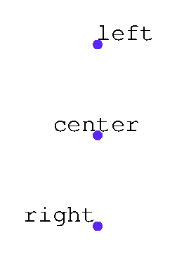
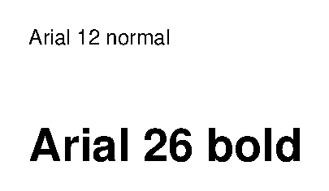

Глава 7 · Глубокое погружение в Turtle
Выравнивание и шрифт
Текст можно не просто вывести, а управлять тем, как он растёт от точки — и как выглядит.
У write() есть два параметра, которые превращают текст из
подписи «куда получится» в управляемый элемент интерфейса — важно для меток и подписей.
align — откуда растёт текст
Точка, куда мы переместили черепашку — это не всегда начало текста. Параметр
align определяет, как текст расположен ОТНОСИТЕЛЬНО этой
точки:
vyravnivanie.py
import turtle
screen = turtle.Screen()
screen.setup(width=460, height=260)
artist = turtle.Turtle()
artist.hideturtle()
artist.penup()
for y, align, text in [(60, "left", "left"), (0, "center", "center"), (-60, "right", "right")]:
artist.goto(0, y)
artist.dot(6, "#5B24F9")
artist.write(text, align=align, font=("Arial", 16, "normal"))
screen.exitonclick()Результат выполнения

vyravnivanie_kod.py
for y, align, text in [(60, "left", "left"), (0, "center", "center"), (-60, "right", "right")]:
artist.goto(0, y)
artist.dot(6, "#5B24F9")
artist.write(text, align=align, font=("Arial", 16, "normal"))| align | Где точка относительно текста |
|---|---|
"left" (по умолчанию) | точка — начало текста, текст растёт вправо |
"center" | точка — центр текста |
"right" | точка — конец текста, текст растёт влево |
font — размер и начертание
shrift.py
import turtle
screen = turtle.Screen()
screen.setup(width=420, height=220)
artist = turtle.Turtle()
artist.hideturtle()
artist.penup()
artist.goto(-180, 40)
artist.write("Arial 12 normal", font=("Arial", 12, "normal"))
artist.goto(-180, -30)
artist.write("Arial 26 bold", font=("Arial", 26, "bold"))
screen.exitonclick()Результат выполнения

shrift_kod.py
artist.write("Arial 12 normal", font=("Arial", 12, "normal"))
artist.write("Arial 26 bold", font=("Arial", 26, "bold"))align="center" — то, что нужно для подписей на графиках
Когда мы подписываем деления координатной оси или центр фигуры,
align="center" почти всегда выглядит аккуратнее — иначе подпись съезжает в сторону от точки, которую описывает.Практика: выравнивание и шрифт текста
Модуль turtle открывает нативное окно Python — выполните локально в VS Code, PyCharm или Jupyter